스토리지 디바이스¶
개요¶
OSD(Object Storage Daemon)는 실제 데이터를 저장하고, 데이터를 복제 및 복구하며, 클러스터 내 데이터를 균형 있게 분산시키는 핵심 구성 요소입니다. 각 OSD는 하나의 물리 또는 가상 디스크에 연결되며, 일반적으로 클러스터에서 수십 개에서 수천 개의 OSD가 함께 동작합니다.
OSD는 데이터를 RADOS 객체로 저장하고, PG(Placement Group)를 기반으로 데이터를 관리합니다. 클러스터 내 장애 조치, 복제, 리밸런싱 등 다양한 작업을 OSD 간 통신을 통해 자율적으로 처리합니다.
OSD는 CRUSH 맵을 통해 데이터의 위치ㅏ를 결정하며, 이를 기반으로 고가용성과 확장성을 보장합니다. 각 OSD는 상태(Up/Down, In/Out)로 관리되며, 클러스터의 안정성 및 성능을 위해 주기적인 상태 점검이 필요합니다.
OSD 장애 발생 시 자동으로 복구 절차가 진행되며, 관리자는 필요한 경우 OSD를 수동으로 재시작하거나 제거할 수 있습니다.
SSD, HDD 또는 NVMe 기반 디스크에서 동작할 수 있으며, 장비 특성에 따라 성능 최적화를 적용할 수 있습니다. 클러스터의 저장 성능과 안정성은 OSD 수와 품질에 큰 영향을 받으며, 설계 시 충분한 리소스 확보가 중요합니다.
스토리지 디바이스 목록 조회(OSDs List)¶
{kind=link}
장치 탭(Devices)¶
- 아이디 옆 화살표를 클릭하면, 해당 OSD의 장치 아이디, 장치 이름, 데몬 등을 확인할 수 있습니다.
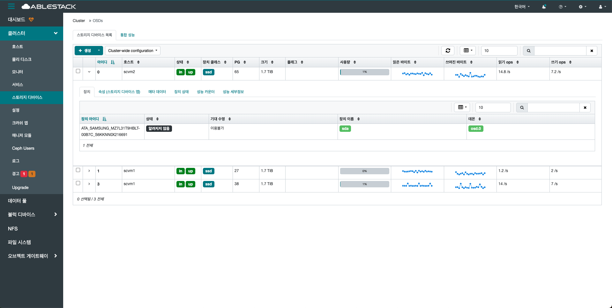
{kind=link}
속성(스토리지 디바이스 맵) 탭 (Attributes(OSD map))¶
- 아이디 옆 화살표를 클릭하면, 해당 OSD의 속성을 확인할 수 있습니다.
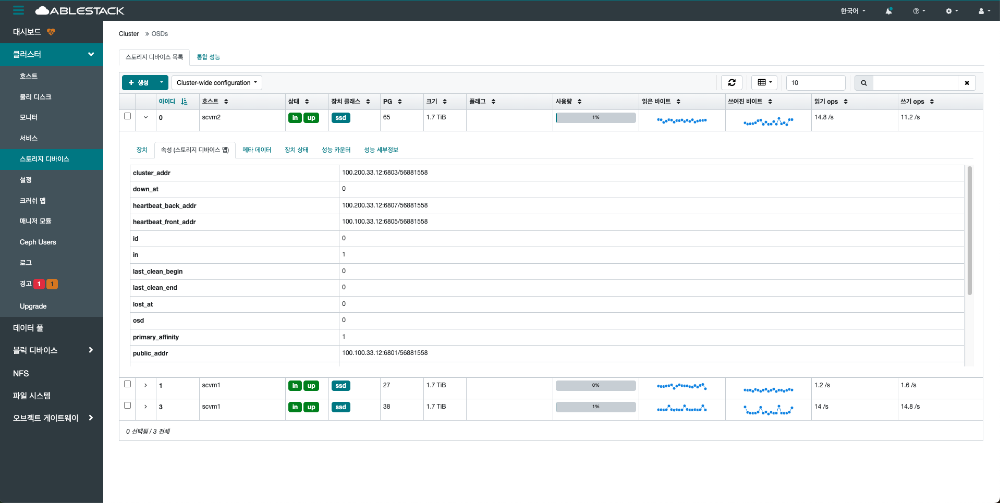
{kind=link}
메타 데이터 탭(Metadata)¶
- 아이디 옆 화살표를 클릭하면, 해당 OSD의 메타 데이터에 대한 세부 설정 값을 확인할 수 있습니다.
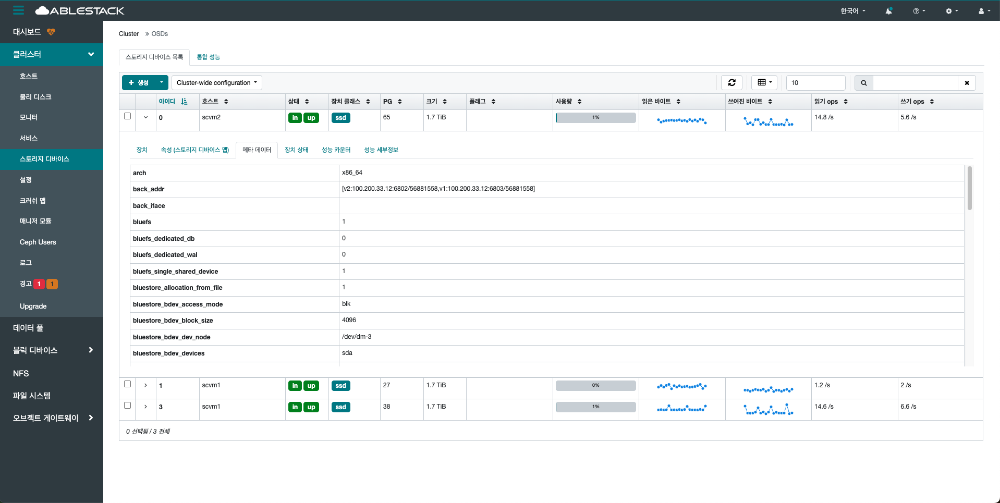
{kind=link}
장치 상태 탭(Device health)¶
- 아이디 옆 화살표를 클릭하면, 해당 OSD의 디스크 세부 정보를 확인할 수 있습니다.
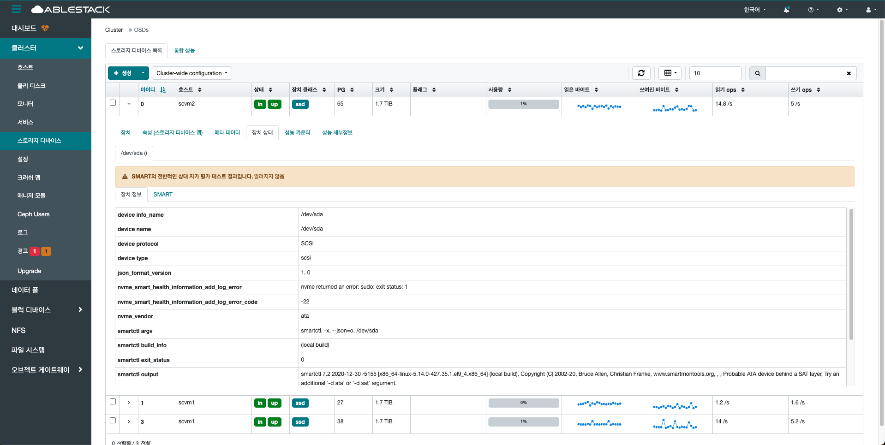
{kind=link}
성능 카운터 탭(Performance counter)¶
- 아이디 옆 화살표를 클릭하면, 해당 OSD의 성능에 대한 세부 설정 값을 확인할 수 있습니다.
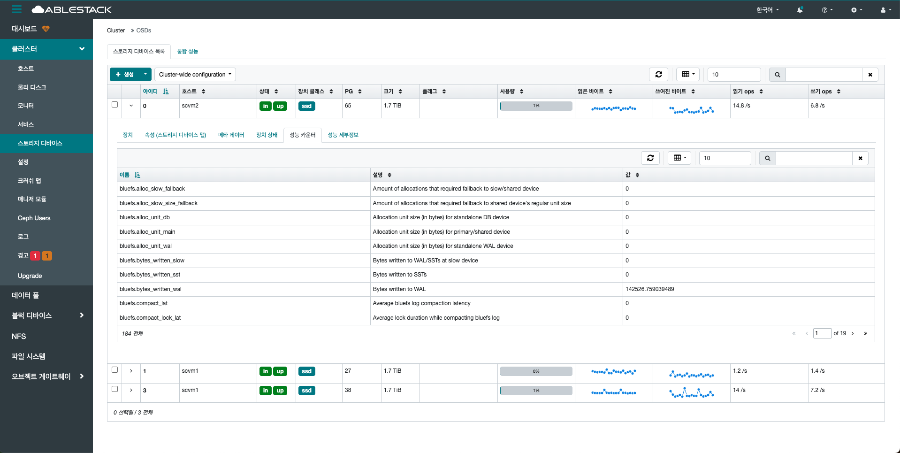
{kind=link}
성능 세부정보 탭(Performance Details)¶
- 아이디 옆 화살표를 클릭하면, 해당 OSD의 자세한 성능 지표를 확인할 수 있습니다.
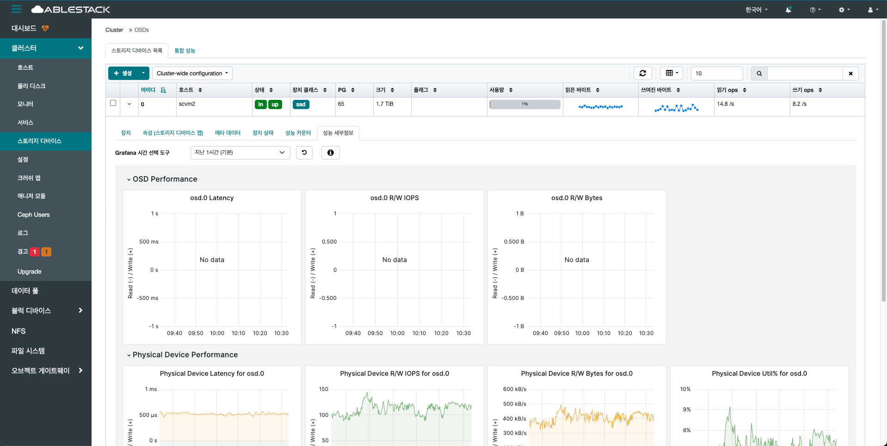
{kind=link}
생성(Create)¶
- 아이디 상단 생성 버튼을 클릭합니다.
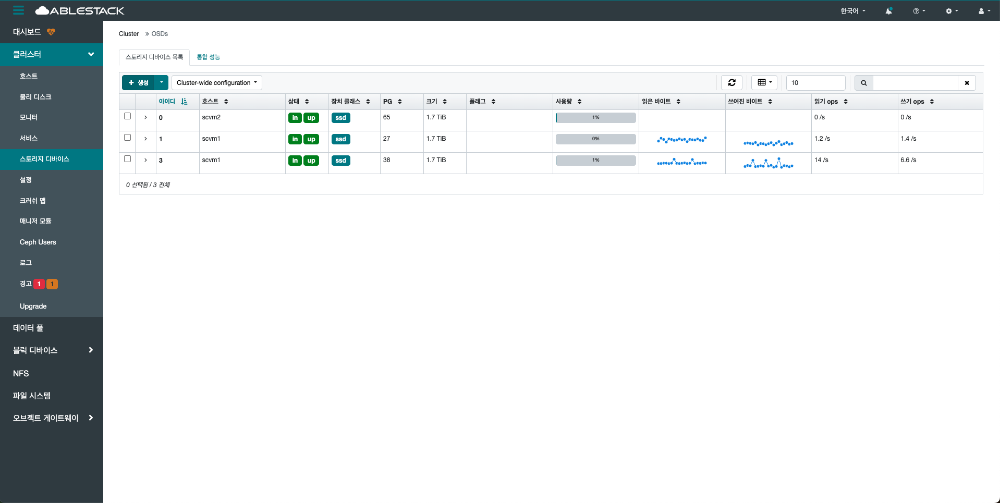
- 생성 버튼을 클릭한 화면입니다.
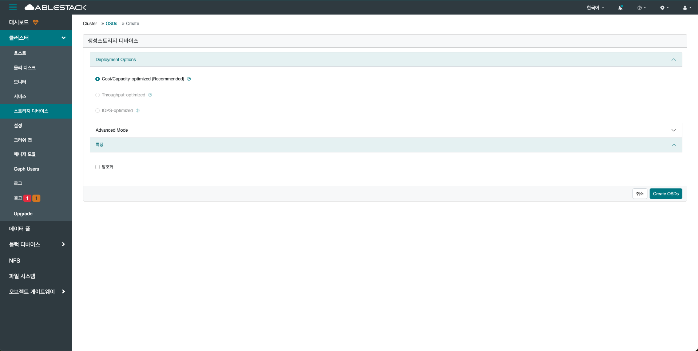
- Deployment Options 에서 Cost/Capacity-optimized(Recommended) 를 선택합니다.
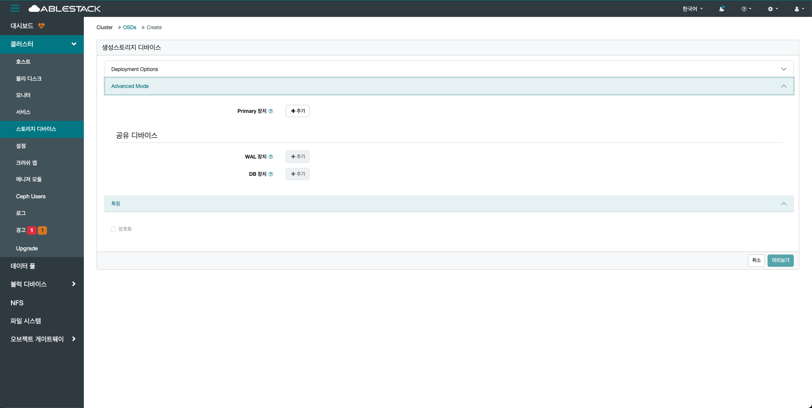
- Advanced Mode 에서 Primary 장치 의 추가 버튼을 클릭합니다.
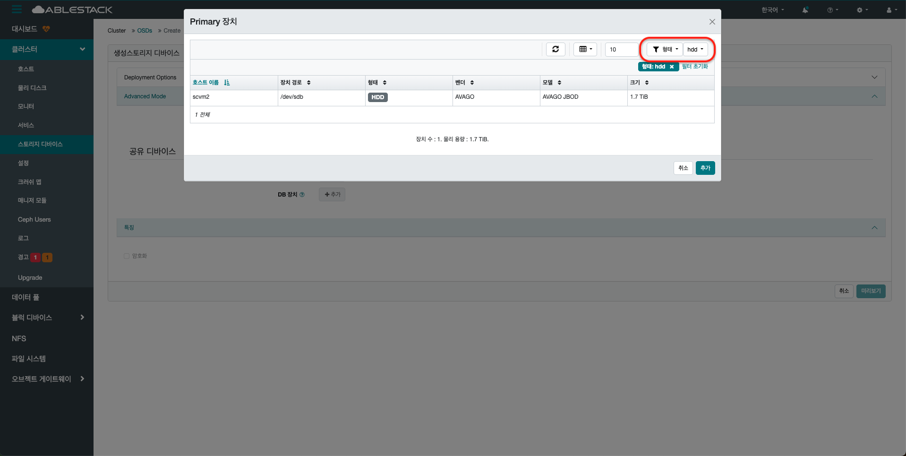
- 오른쪽 상단의 필터링 옵션에서 형태 를 선택한 후, 사용자의 환경에 맞게 SSD 또는 HDD 중 하나를 선택합니다.
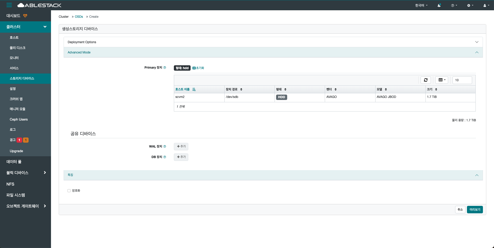
- 선택한 디스크 위치 및 유형이 올바른지 확인한 후, 미리보기 버튼을 클릭하여 OSD 구성을 진행합니다.
Info
만약 SSD와 HDD 유형의 디스크가 혼합되어 있다면, 먼저 SSD 디스크를 추가한 후, 다시 생성 버튼을 클릭하여 HDD 디스크를 추가하시기 바랍니다.
- Deployment Options 에서 Cost/Capacity-optimized(Recommended) 를 선택합니다.
{kind=link}
{kind=link}
{kind=link}
{kind=link}
{kind=link}
편집(Edit)¶
- 편집이 필요한 OSD를 선택한 후, 상단의 편집 버튼을 클릭합니다.
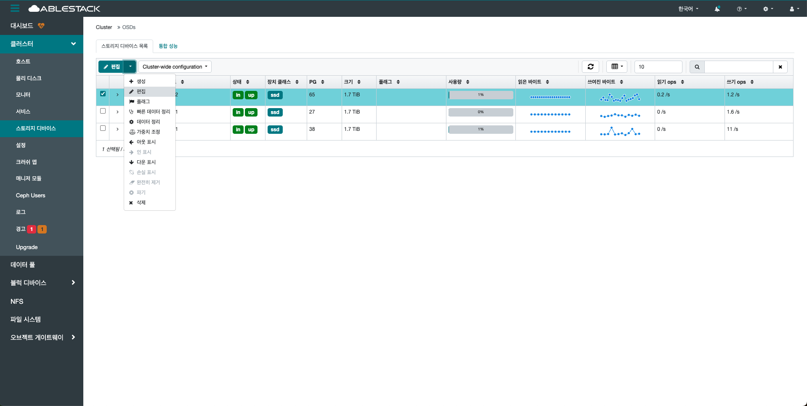
- 편집할 OSD를 선택하세요.
- 편집 버튼을 클릭한 화면입니다.
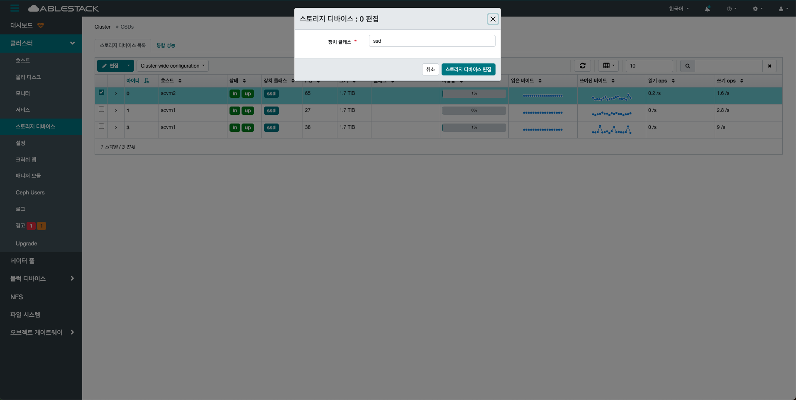
- 구분 지을 장치 클래스 를 수정합니다.
{kind=link}
{kind=link}
플래그(Flags)¶
Info
플래그는 일반적으로 특정 동작을 제어하거나 제한하기 위한 OSD 상태 제어 플래그 입니다.
특정 상황에서 OSD의 읽기/쓰기, backfill, 리밸런싱 등의 동작을 제한하거나 강제하기 위해 사용됩니다.
- 플래그가 필요한 OSD를 선택한 후, 상단의 플래그 버튼을 클릭합니다.
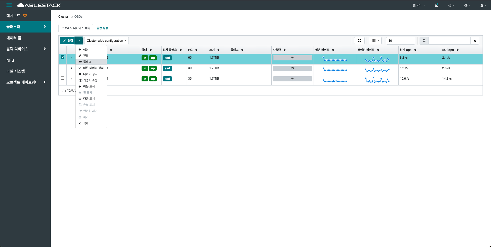
- 플래그를 설정할 OSD를 선택하세요.
- 플래그 버튼을 클릭한 화면입니다.
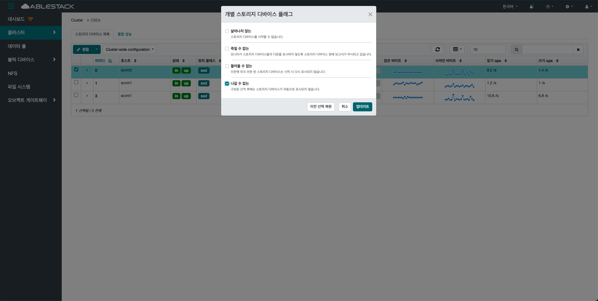
- 상황에 맞는 플래그를 선택합니다.
- 업데이트 버튼을 클릭합니다.
{kind=link}
{kind=link}
빠른 데이터 정리(Scrub)¶
Info
빠른 데이터 정리는 디스크의 메타데이터 영역이나 파일 시스템 정보만 삭제합니다.
데이터 전체를 덮어쓰지는 않고, 디스크를 다시 사용할 수 있게 최소한의 정리만 수행하여, 속도가 빠르지만, 실제 데이터는 남아 있을 수 있습니다.
- 빠른 데이터 정리가 필요한 OSD를 선택한 후, 상단의 빠른 데이터 정리 버튼을 클릭합니다.
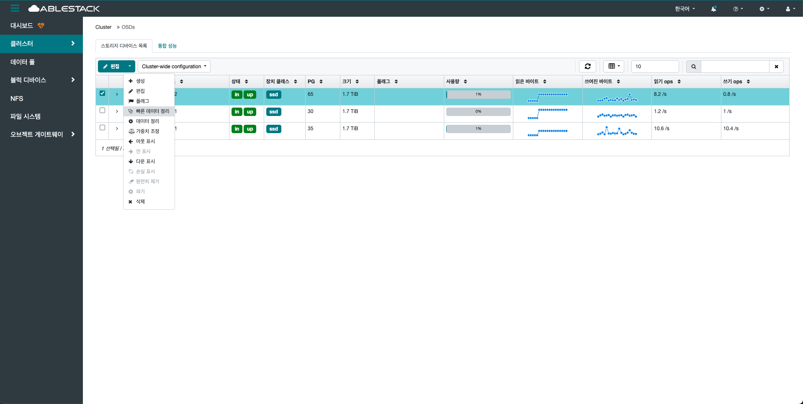
- 빠른 데이터 정리를 설정할 OSD를 선택하세요.
- 빠른 데이터 정리 버튼을 클릭한 화면입니다.
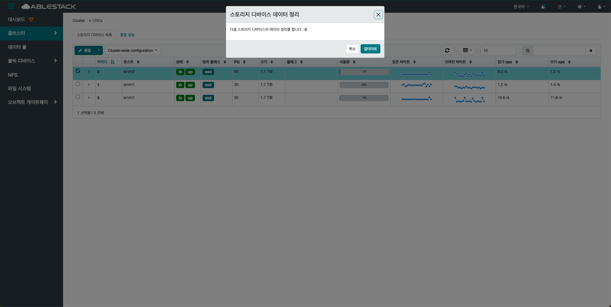
- 빠른 데이터 정리를 실행할 디스크를 한번 더 확인하신 후, 업데이트 버튼을 클릭합니다.
{kind=link}
{kind=link}
데이터 정리(Deep Scrub)¶
Info
데이터 정리는 디스크의 전체 영역을 0 또는 무작위 값으로 덮어쓰기하여 모든 데이터를 물리적으로 제거합니다.
시간이 오래 걸리지만, 보안이나 재사용 시 완전한 초기화가 필요할 때 사용되며, 데이터 복구는 불가능합니다.
Danger
데이터 정리 기능을 사용할 경우, 디스크의 모든 데이터가 완전히 삭제되며 복구가 불가능합니다. 이 작업은 되돌릴 수 없으므로, 반드시 필요한 경우에만 실행하시기 바랍니다.
- 데이터 정리가 필요한 OSD를 선택한 후, 상단의 데이터 정리 버튼을 클릭합니다.
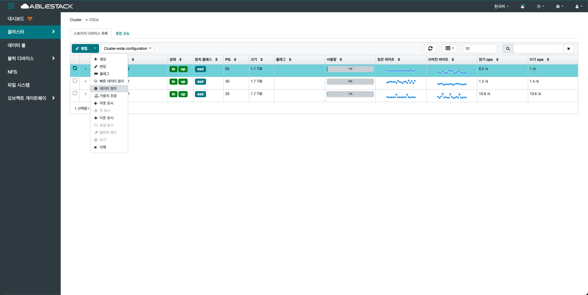
- 데이터 정리를 설정할 OSD를 선택하세요.
- 데이터 정리 버튼을 클릭한 화면입니다.
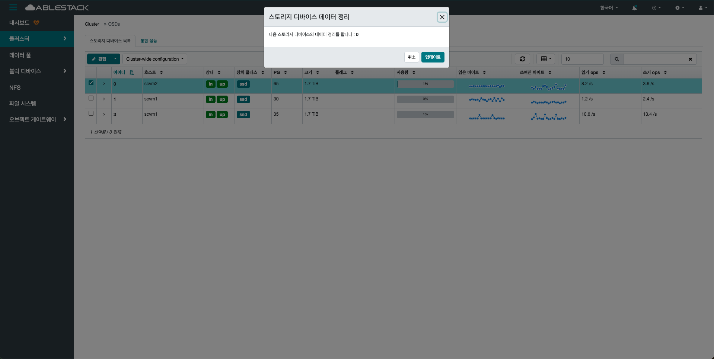
- 데이터 정리를 실행할 디스크를 한번 더 확인하신 후, 업데이트 버튼을 클릭합니다.
{kind=link}
{kind=link}
가중치 조정(Reweight)¶
Info
가중치 조정은 OSD가 저장 데이터 분배에 미치는 영향력을 조절하는 기능입니다.
즉, 특정 OSD가 데이터 저장 시 얼마나 많이 또는 적게 데이터를 저장할지를 결정할 수 있습니다. 범위는 0.0 ~ 1.0 입니다.
- 가중치 조정이 필요한 OSD를 선택한 후, 상단의 가중치 버튼을 클릭합니다.
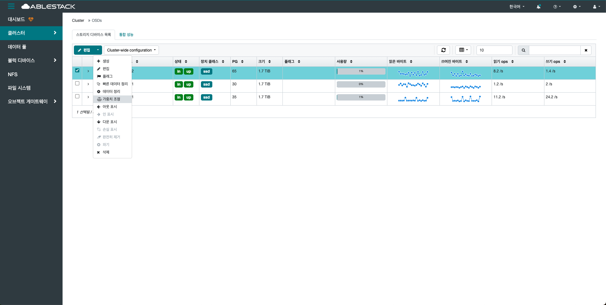
- 가중치 조정을 설정할 OSD를 선택하세요.
- 가중치 조정 버튼을 클릭한 화면입니다.
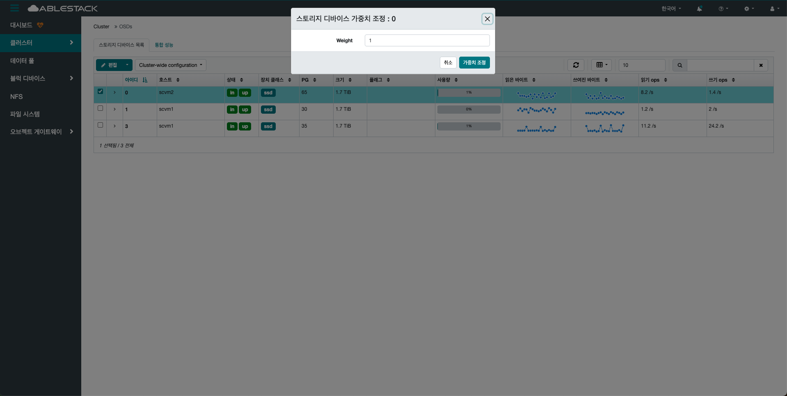
- 가중치 조정을 위해 0.0부터 1.0까지의 숫자를 입력합니다.
{kind=link}
{kind=link}
아웃 표시(Mark Out)¶
Info
OSD를 클러스터에서 데이터 재분배 대상으로 지정합니다.
데이터를 다른 OSD로 옮기기 시작하며, 더 이상 새로운 데이터를 받지 않습니다.
- 아웃 표시가 필요한 OSD를 선택한 후, 상단의 아웃 표시 버튼을 클릭합니다.
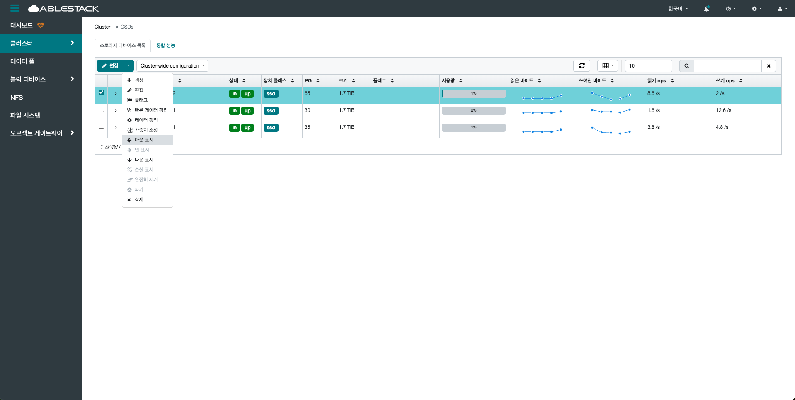
- 아웃 표시를 설정할 OSD를 선택하세요.
- 아웃 표시 버튼을 클릭한 화면입니다.
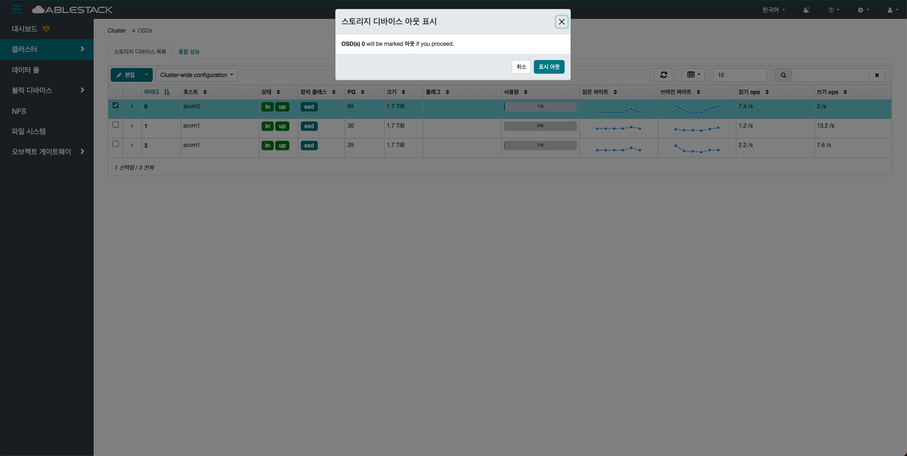
- 아웃 표시를 실행할 디스크를 한번 더 확인하신 후, 표시 아웃 버튼을 클릭합니다.
{kind=link}
{kind=link}
인 표시(Mark In)¶
Info
아웃(Mark Out) 표시 처리된 OSD를 다시 클러스터에 활성화하여 참여시키는 기능입니다.
이 작업을 수행하면 해당 OSD는 다시 데이터 배치 대상이 되며, 클러스터의 정상 구성원으로 복귀하게 됩니다.
인(Mark In) 표시 버튼은 OSD가 아웃(Mark Out) 상태일 때만 활성화됩니다.
- 인 표시가 필요한 OSD를 선택한 후, 상단의 인 표시 버튼을 클릭합니다.
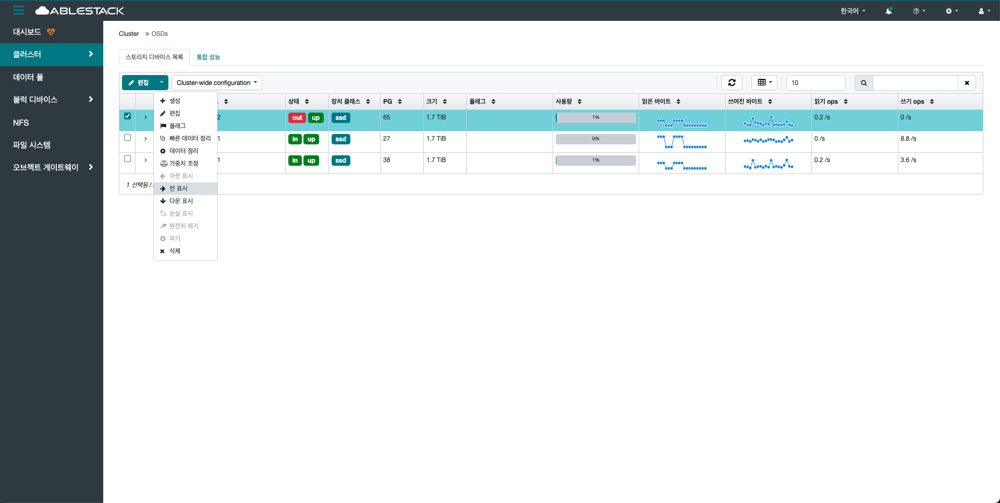
- 인 표시를 설정할 OSD를 선택하세요.
- 인 표시 버튼을 클릭한 화면입니다.
- 인 표시를 실행할 디스크를 한번 더 확인하신 후, 표시 인 버튼을 클릭합니다.
{kind=link}
{kind=link}
다운 표시(Mark Down)¶
Info
OSD가 응답하지 않거나 장애가 감지되었을 때 자동으로 상태를 Down으로 변경하지만, 관리자가 직접 특정 OSD를 비정상 상태로 전환하고자 할 때 사용합니다.
디스크에서 이상 징후가 발견되었거나, 네트워크 문제로 연결이 불안정한 경우, 사전에 클러스터에서 해당 OSD를 제외하고 후속 조치를 취할 수 있도록 수동 Down 설정을 합니다.
이 작업을 수행하면 클러스터는 해당 OSD를 더 이상 데이터 입출력에 사용하지 않으며, 필요한 경우 데이터 재배치 또는 복구 작업이 자동으로 진행됩니다.
- 다운 표시가 필요한 OSD를 선택한 후, 상단의 다운 표시 버튼을 클릭합니다.
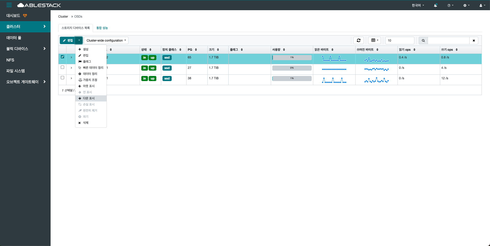
- 다운 표시를 설정할 OSD를 선택하세요.
- 다운 표시 버튼을 클릭한 화면입니다.
- 다운 표시를 실행할 디스크를 한번 더 확인하신 후, 표시 다운 버튼을 클릭합니다.
{kind=link}
{kind=link}
손실 표시(Mark Lost)¶
Info
복구가 불가능한 OSD로 간주하고, 해당 디스크의 데이터를 포기합니다.
디스크가 완전히 손상되어 더 이상 복구할 수 없을 때 사용하며, 클러스터는 나머지 복제본을 기준으로 데이터를 다시 구성하려 시도합니다.
손실(Mark Lost) 표시 버튼은 다운(Mark Down) 상태일 때만 활성화됩니다.
Danger
이 작업은 데이터 손실을 감수하겠다는 의미이므로, 데이터가 일부 유실될 수 있습니다. 매우 신중하게 결정해야 합니다.
- 손실 표시가 필요한 OSD를 선택한 후, 상단의 손실 표시 버튼을 클릭합니다.
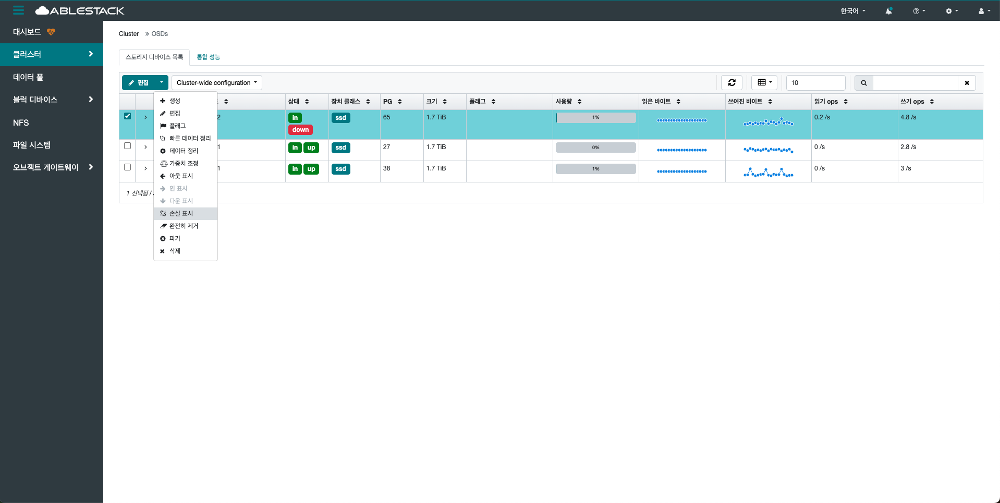
- 손실 표시를 설정할 OSD를 선택하세요.
- 손실 표시 버튼을 클릭한 화면입니다.
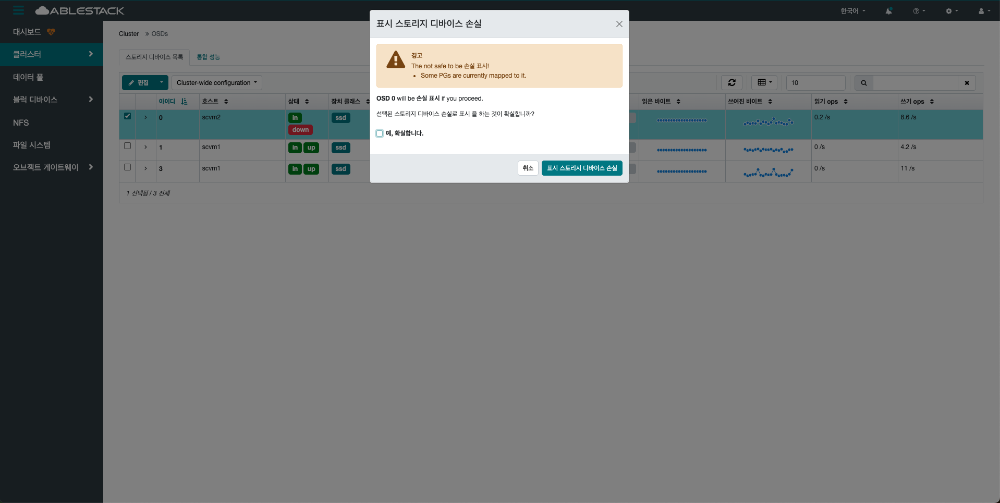
- 손실 표시를 실행할 디스크를 한번 더 확인하신 후, 예,확실합니다. 를 선택합니다.
- 표시 스토리지 디바이스 손실 버튼을 클릭합니다.
{kind=link}
{kind=link}
완전히 제거(Purge)¶
Info
OSD의 모든 정보(구성, 메타데이터 등)를 클러스터에서 완전히 삭제합니다.
시스템에서 영구적으로 제거할 때 사용합니다. 즉, 클러스터에서 해당 디스크의 존재 자체를 완전히 삭제합니다.
- 완전히 제거가 필요한 OSD를 선택한 후, 상단의 완전히 제거 표시 버튼을 클릭합니다.
- 완전히 제거 표시를 설정할 OSD를 선택하세요.
- 완전히 제거 표시 버튼을 클릭한 화면입니다.
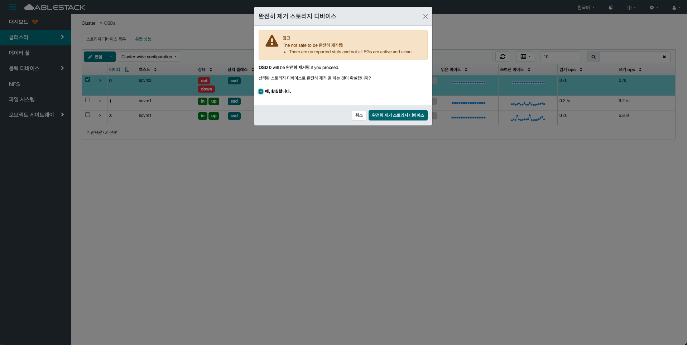
- 완전히 제거 표시를 실행할 디스크를 한번 더 확인하신 후, 예,확실합니다. 를 선택합니다.
- 완전히 제거 스토리지 디바이스 버튼을 클릭합니다.
{kind=link}
{kind=link}
파기(Destroy)¶
Info
OSD의 UUID, 크러시 맵 정보 등 메타 정보를 제거합니다.
실제 OSD 장치의 데이터는 그대로일 수 있으나, 클러스터에서는 더 이상 인식하지 않습니다. 즉, 디스크의 ID나 구성 정보 등은 제거하지만, 실제 장치는 그대로 남아 있을 수 있습니다.
- 파기 표시가 필요한 OSD를 선택한 후, 상단의 파기 표시 버튼을 클릭합니다.
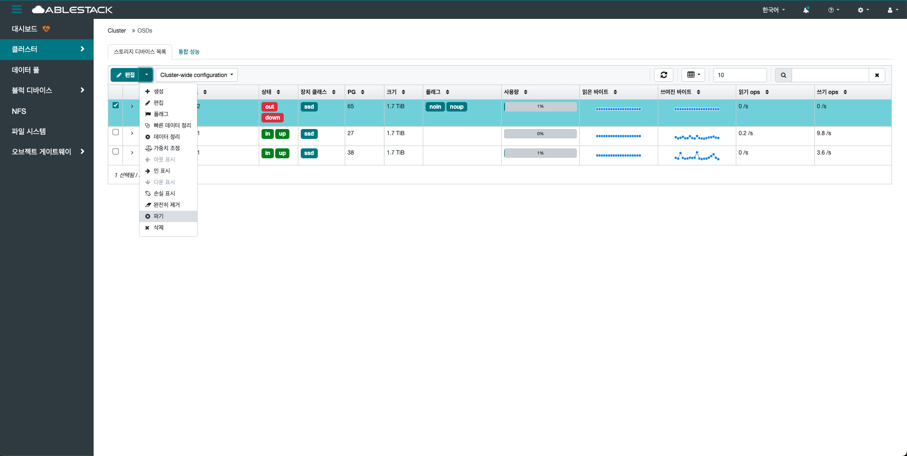
- 파기 표시를 설정할 OSD를 선택하세요.
- 파기 표시 버튼을 클릭한 화면입니다.
- 파기 표시를 실행할 디스크를 한번 더 확인하신 후, 예,확실합니다. 를 선택합니다.
- 파기 스토리지 디바이스 버튼을 클릭합니다.
{kind=link}
{kind=link}
삭제(Delete)¶
Info
파기(Destroy)와 유사하지만, 일반적으로 OSD ID를 제거하는 데 사용됩니다.
OSD 정보를 클러스터에서 제거하지만, 메타데이터 일부는 남아 있을 수 있습니다.
Warning
삭제 전에 Mark Out, Mark Down, Destroy 등의 과정을 반드시 선행해야 안전합니다.
- 삭제 표시가 필요한 OSD를 선택한 후, 상단의 삭제 표시 버튼을 클릭합니다.
- 삭제 표시를 설정할 OSD를 선택하세요.
- 삭제 표시 버튼을 클릭한 화면입니다.
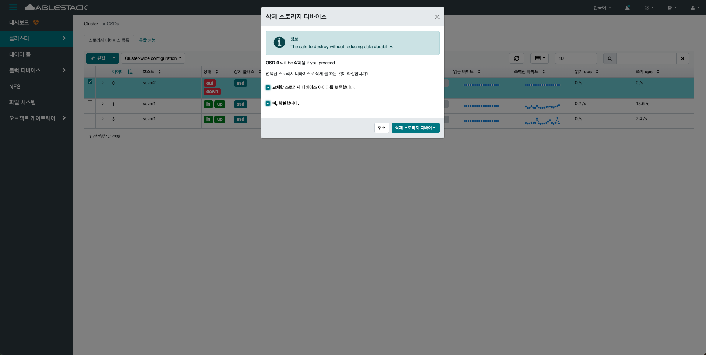
- 삭제 표시를 실행할 디스크를 한번 더 확인하신 후, 예,확실합니다. 를 선택합니다.
- 교체할 스토리지 디바이스 아이디를 동일하게 사용하실 경우, 교체할 스토리지 디바이스 아이디를 보존합니다. 를 선택합니다.
- 삭제 스토리지 디바이스 버튼을 클릭합니다.
{kind=link}
{kind=link}